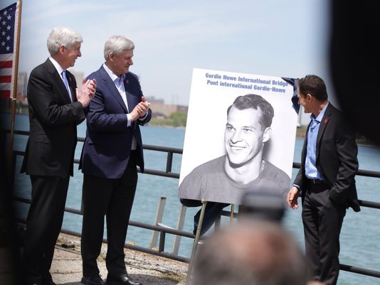
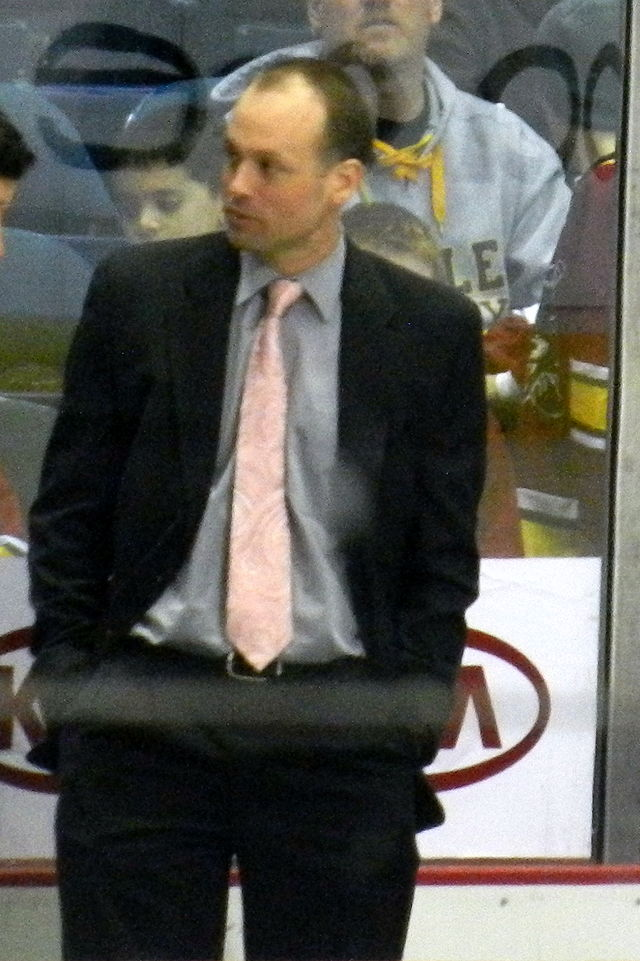

News
After failing to come to terms on a contract extension with the Red Wings, Coach Mike Babcock requested and received permission to seek employment elsewhere on May 8, 2015. The Buffalo Sabres were considered the most serious contenders for Babcock's services. However, on May 20, 2015, it was announced that Babcock would become the new head coach of the Toronto Maple Leafs. He reportedly received an eight year deal worth $50 million ($6.25 million per season average), and will be the highest paid coach in NHL history. Prior to Babcock inking the deal, Todd McLellan of the Edmonton Oilers was the highest paid coach in the league, reportedly earning $3 million per season.
Jeff Blashill (born December 10, 1973) is an American ice hockey head coach of the Detroit Red Wings of the National Hockey League (NHL). Blashill previously served as the head coach for the Grand Rapids Griffins of the American Hockey League (AHL), assistant coach for the Red Wings, the head coach of the Western Michigan Broncos men's ice hockey team and as the head coach and general manager of the Indiana Ice and was an assistant hockey coach at Ferris State University and Miami University.
Playing career
Jeff Blashill was born in Detroit, Michigan and grew up in Sault Ste. Marie, Michigan. Blashill played college hockey as a goaltender at Ferris State University from 1994 to 1998. He earned team Rookie of the Year honors in 1994 and was named to the CCHA All-Academic team in 1997. Blashill had previously played junior hockey for the Des Moines Buccaneers of the United States Hockey League from 1991 to 1994.
Coaching career
After his playing career ended, Blashill joined Ferris State as an assistant coach in 1999. He remained there for 3 seasons before joining Miami University as an assistant coach in 2002.
In 2008 he was named head coach and general manager of the Indiana Ice, a Tier 1 junior hockey team in the United States Hockey League. In Blashill's first season, the Ice won the Clark Cup for the USHL Championship.
Blashill was named head coach of the Western Michigan Broncos men's ice hockey team on April 6, 2010. In his first season as head coach, Blashill led WMU to a top-four finish in the CCHA, the CCHA Championship game, and the 2011 NCAA Division I Men's Ice Hockey Tournament, the best season for WMU in 15 years. After the season, he was named USCHO Coach of the Year, Inside College Hockey Coach of the Year, and College Hockey News Coach of the Year.
In July 2011, after only one season at Western Michigan, Blashill accepted an assistant coach position for the NHL's Detroit Red Wings under head coach Mike Babcock.
On June 25, 2012, it was announced that Blashill will become the head coach of the Grand Rapids Griffins, the top minor league affiliate of the Red Wings. He replaced Curt Fraser, who had accepted an assistant coaching position with the Dallas Stars of the NHL. Blashill was replaced on the Red Wings staff by NHL veteran assistant Tom Renney.
On June 18, 2013, the Griffins under Blashill won the Calder Cup as American Hockey League champions for the first time in club history.
Blashill was awarded the Louis A. R. Pieri Memorial Award as the AHL's most outstanding coach for the 2013/14 AHL season. In two seasons as head coach, Blashill has guided the Griffins to a combined 88/48/2/12 record that includes winning the Calder Cup championship in 2013. The Griffins have posted three separate seven-game winning streaks while never losing more than two consecutive games in regulation.
On June 4, 2014, it was announced Blashill had agreed to a new three-year contract, through the 2016/17 season.
With a win over the Rockford IceHogs on April 1, 2015, Blashill became the first coach in franchise history to post three 40-win seasons, and three 90-point seasons.
Following the departure of Babcock to Toronto, Blashill was named the head coach of the Red Wings.
International
Blashill has also been a member of Team USA's coaching staff three times in international competition, at the 2006 Ivan Hlinka Memorial Tournament, the 2009 World Junior A Challenge, and the 2009 IIHF World Junior Championship.
Personal life
Blashill was raised in Sault Ste. Marie, Michigan, where his father Jim was a professor at nearby Lake Superior State University. Jim had originally worked as a police officer in Detroit and served as a professor of criminal justice at LSSU for over 30 years. Jeff's brother, Tim Blashill, also played and coached college hockey. Tim currently coaches high school hockey in Big Rapids, Michigan and also serves as program coordinator for Ferris State's Ewigleben Arena. Blashill and his wife, Erica, live in East Grand Rapids with their three children, Teddy, Josie and Owen.
Head coaching Record
Indiana 2008/2009 in the USHL League, record: 39/19/0
Indiana 2009/2010 in the USHL League, record: 33/24/0
Western Michigan 2010/2011 in the CCHA League, record: 19/13/10
Grand Rapids 2012/2013 in the AHL, record: 42/26/0
Grand Rapids 2013/2014 in the AHL, record: 6/23/0
Grand Rapids 2014/2015 in the AHL, record: 46/22/0

Michigan Governor Rick Snyder, from left Canada Prime Minister Stephen Harper and Murray Howe, Gordie Howe's son announced that the future publicly owned bridge between Windsor, Ontario and Detroit, Mich, would be named Gordie Howe International Bridge.
Canada Prime Minister Stephen Harper and Gov. Rick Snyder met along the Windsor riverfront to announce the name of the planned new crossing as the Gordie Howe International Bridge. The qualities that made Gordie Howe "Mr. Hockey" are the same leaders from the U.S. and Canada want in their new Detroit-Windsor bridge: strength, endurance, excellence.
The choice in many ways seemed obvious, widely promoted by fans in advance, although disliked by some for naming a bridge after a sports figure.

New Coach Jeff Blashill